flowchart TD EC2((EC2 Family)) E1(Gen Purpose) E2(Compute Optimized) E3(Storage Optimized) E4(Memory/RAM Optimized) E5(Accelerated Computing) U1[Web Servers] U2[ML/DL in High power CPU] U3[MongoDB/NoSQL DBs] U4[Capable of processing<br>large workloads<br>in memory] U5[Workloads<br>needing GPUs] EC2 --> E1 EC2 --> E2 EC2 --> E3 EC2 --> E4 EC2 --> E5 E1 --> U1 E2 --> U2 E3 --> U3 E4 --> U4 E5 --> U5
I’ve pulled together my notes on AWS Fundamentals — covering Security, Compute, Networking, Databases, and more — based on the AWS Technical Essentials course from Coursera. I’ve also included my ChatGPT interactions, where I explored specific doubts and clarified tricky concepts along the way. This resource should be handy for anyone attempting to revise concepts before an AWS exam
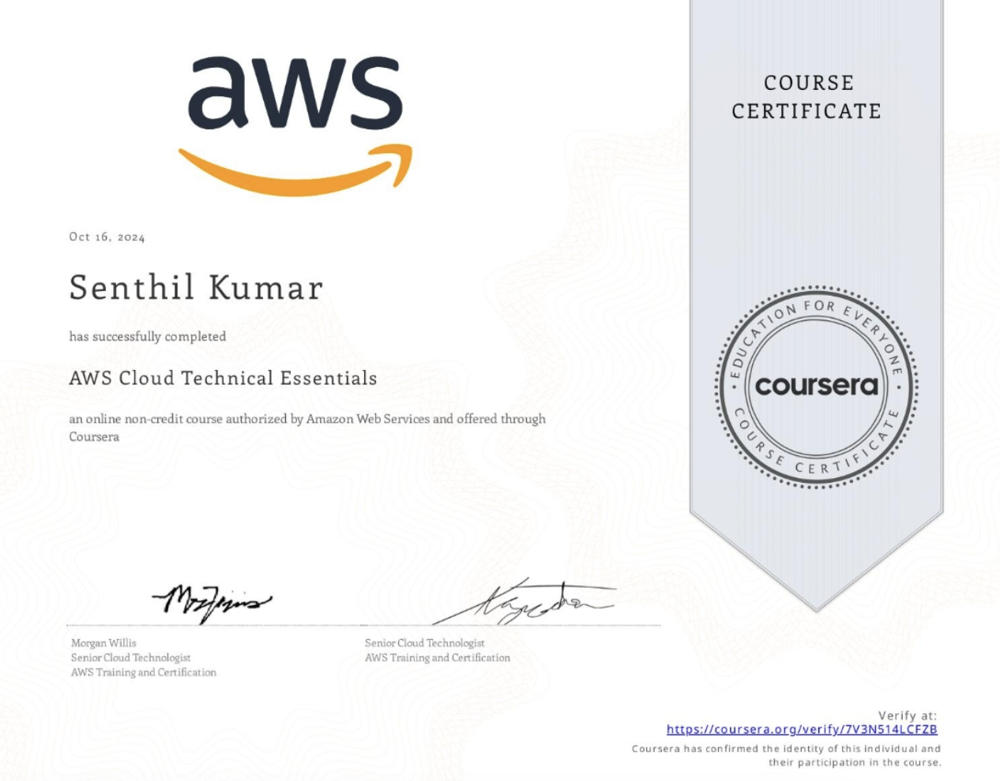
Source: All pictures are from the Coursera Course (unless specified otherwise) and are intended only for learning purposes.
1. Introduction to AWS
1. Introduction to AWS - The Critical Elements
Regions → AZs → Data Centers
- AWS Regions consist of Availability Zones (AZs).
- AZs consist of one or more physical data centers.
Root account first steps (non‑negotiable)
- Enable MFA on the root user immediately
- Create an IAM Administrator role
- Full service creation permissions
- No account‑level or billing changes
- Lock away root credentials
IAM policies cannot restrict the root user
- Root user always has unrestricted access, regardless of IAM policies.
Shared Responsibility Model
- AWS = security of the cloud
- Customer = security in the cloud
Summary: Every activity in AWS is an API call
- Console clicks, CLI commands, SDK calls → all become authenticated & authorized AWS API requests.
Choose the Right AWS Region
Essential takeaway:
Choose Region in this order:
- Compliance / data residency
- Latency
- Service availability
- Cost
- Availability & DR needs
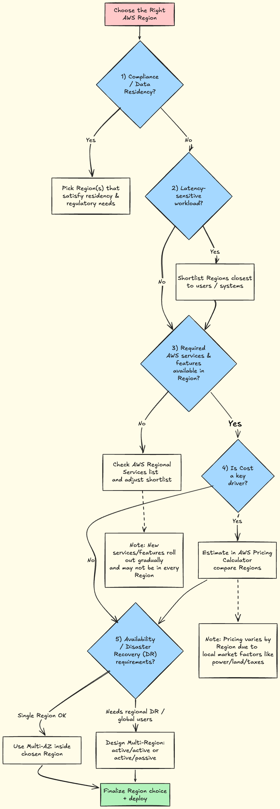
Availability Zones
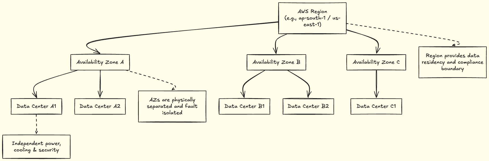
- Each Region contains multiple AZs
- Each AZ = one or more data centers
- Data centers are:
- Physically separate
- Redundantly powered and networked
- AZs are connected by low‑latency, high‑bandwidth links
- AZ names:
<region><letter>(example:us-east-1a)- Letter mappings differ per account
- Resource location example:
us-east-1c→ AZ “c” insideus-east-1
Scope of AWS Services

Scope summary:
Global services
- Single logical control plane across AWS
- Example: IAM, Route 53, CloudFront
Regional services
- Live within a Region, usually span multiple AZs
- Example: S3, DynamoDB, VPC, RDS Multi‑AZ
Zonal services
- Bound to a single AZ
- Example: EC2, EBS, RDS Single‑AZ
Availability & durability:
- Some services are AWS‑managed
- Others require customer‑designed HA/DR
Maintain Resiliency
- Prefer Region‑scoped managed services
- Otherwise:
- Deploy across multiple AZs
- Minimum two AZs
- AZ failure ≠ application outage when designed correctly
Protect the AWS Root User
AWS Root User
- Created with the AWS account
- Has full, unrestricted access
- Credentials:
- Email + password (console)
- Access keys (programmatic)
Critical facts:
- IAM policies cannot limit root
- Root should never be used for daily work
Root User Best Practices
- Enable MFA
- Strong, unique password
- Delete root access keys
- Use root only for:
- Account setup
- Billing
- Rare account‑level tasks
Why MFA Matters
- Passwords alone are weak
- MFA adds a second factor:
- Something you know
- Something you have
- Something you are
- Always enable MFA on root
Control Plane APIs and Data Plane APIs in AWS
AWS describes control plane as administrative APIs (CRUDL) like “creating an S3 bucket”, while data plane includes “getting and putting objects in an S3 bucket
S3 Control plane APIs (AWS CLI examples)
✅ Create a bucket (control plane)
aws s3api create-bucket \
--bucket my-example-bucket-123 \
--region ap-south-1 \
--create-bucket-configuration LocationConstraint=ap-south-1create-bucket “Creates a new S3 bucket.”
- Rule of thumb: Anything Bucket (create bucket, put bucket encryption, put bucket policy, lifecycle, versioning…) is typically “control plane” style because you’re configuring the container and its behavior.
aws s3api delete-object \
--bucket my-example-bucket-123 \
--key docs/readme.txt
- Rule of thumb: Anything Object (PutObject/GetObject/ListObjects/DeleteObject/HeadObject) is “data plane” because you’re interacting with the stored data.
Summary: Every AWS Activity Is an API Call
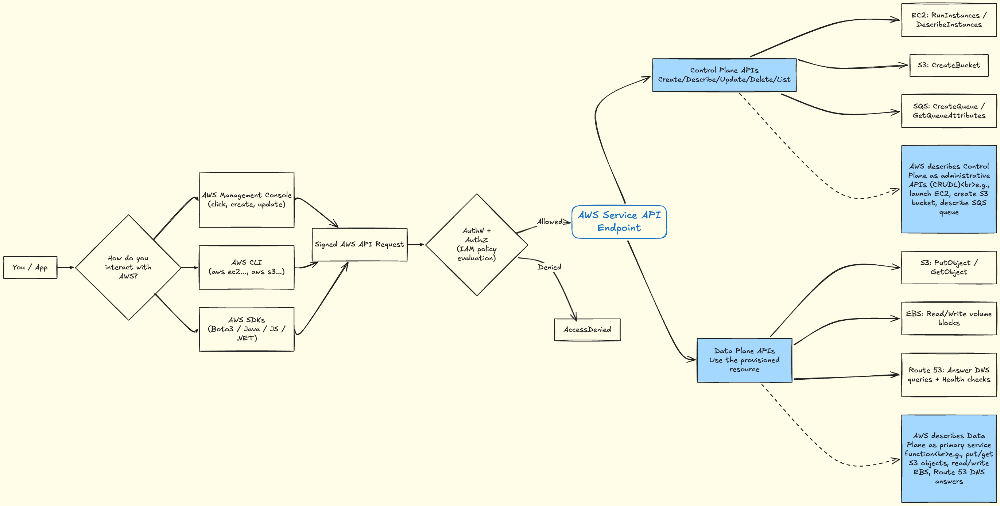
- Console, CLI, SDK → AWS API
- API calls are:
- Authenticated
- Authorized
- Evaluated by IAM
- Understanding this explains:
- IAM behavior
- Auditing (CloudTrail)
- Automation (IaC, CI/CD)
- Security boundaries
By understanding APIs, IAM, Regions, AZs, and responsibility boundaries — one understands AWS.
2. Security
 Source: AWS Builder
Source: AWS Builder
Below is a bare‑minimum, distilled version of your AWS Security notes — keeping only the concepts that actually matter long‑term and removing all repetition and teaching detail.
AWS Security - Quick Notes
1. AWS Identity and Access Management (IAM)
- IAM controls authentication and authorization for AWS accounts and resources.
- Lets you share access without using root credentials.
- Provides fine‑grained, explicit permissions.
- IAM is global (not Region‑specific).
- Supports MFA, password policies, and identity federation.
- IAM itself is free.
2. IAM Identities
- IAM User
- Represents a person or service.
- Has permanent credentials (console and/or programmatic).
- Should not share credentials.
- IAM Group
- Collection of users.
- Permissions are assigned to groups, not individuals.
- Users can belong to multiple groups.
- IAM Role
- No long‑term credentials.
- Uses temporary credentials.
- Preferred for:
- AWS services
- Federated users
- Cross‑account access
3. IAM Policies
- Policies define permissions (allow/deny).
- Attached to users, groups, or roles.
- Evaluated on every AWS API call.
- Core elements:
Effect(Allow / Deny)ActionResource
*on action and resource = full access.- Explicit deny always wins.
4. Security Best Practices
- Lock down the root user
- Enable MFA
- Delete root access keys
- Never use root for daily work
- Least privilege
- Start with minimal access
- Grant only what is required
- Prefer roles over users
- Avoid long‑lived access keys
- Reduce blast radius of credential leaks
5. Federation & Centralized Identity
- Use an Identity Provider (IdP) when possible.
- Grant access via IAM roles, not IAM users.
- AWS IAM Identity Center (SSO):
- Central user & permission management
- Works across multiple AWS accounts
- Integrates with external IdPs
One‑Line Mental Model
IAM decides who can call which AWS APIs on which resources.
Deep Dive into IAM Policy
- IAM policies manage access and permissions to AWS services/resources.
- Policies can be attached to users, groups, or roles.
- When a request is made, AWS evaluates:
- Policies on the user/role
- Policies on any groups the user belongs to
- Policies on the user/role
- Example: A developer in the developers group → AWS checks both the group policies and the user’s policies to decide allow/deny.
IAM POLICY EXAMPLES
Most policies are stored in AWS as JSON documents with several policy elements. Take a look at the following example of what providing admin access through an IAM identity-based policy looks like.
{
"Version": "2012-10-17",
"Statement": [{
"Effect": "Allow",
"Action": "*",
"Resource": "*"
}]
}An IAM policy has four key JSON elements:
- Version → defines the policy language version.
- Always use
"Version": "2012-10-17"for full feature support.
- Always use
- Effect → specifies whether to Allow or Deny access.
- Action → describes the allowed/denied actions.
"*"= wildcard → all actions.
- Resource → defines which resources are affected.
"*"= all resources.
- Version → defines the policy language version.
Example: Policy with
"Action": "*"and"Resource": "*"→ grants administrator access (all actions on all resources).
{"Version": "2012-10-17",
"Statement": [{
"Effect": "Allow",
"Action": [
"iam: ChangePassword",
"iam: GetUser"
],
"Resource": "arn:aws:iam::123456789012:user/${aws:username}"
}]
}- More granular example:
- Allows a user to:
iam:ChangePassword(change their own password)
iam:GetUser(get info about their own user)
- Uses variable substitution
${aws:username}→ limits permissions to the specific user only.
- Allows a user to:
UNDERSTAND POLICY STRUCTURE
When creating a policy, it is required to have each of the following elements inside a policy statement.
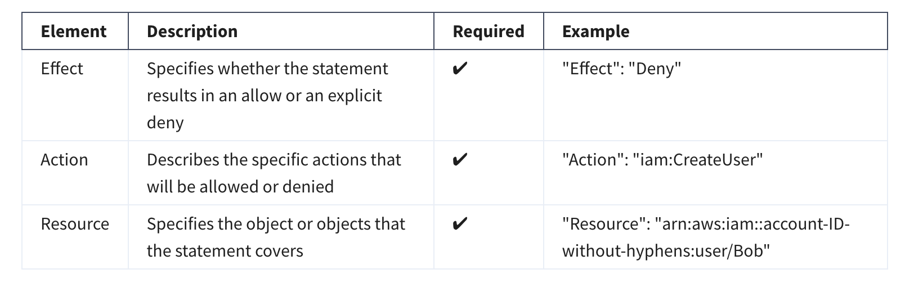
Summarizing Security
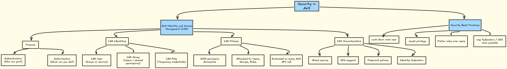
Different types of AWS IAM Users
- Even a CICD System can be an IAM User (with specific permissions)
 Source: AWS Blg
Source: AWS Blg
The concept of Groups and Roles
- One user could be in multiple groups
How to enables employees access AWS Account (via IdP)
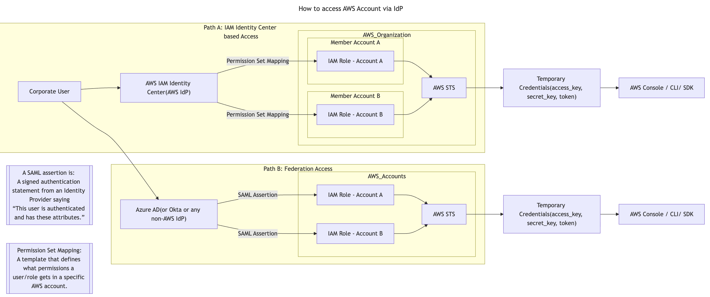
How to enable customers access to Application deployed in AWS Account

| Feature | AWS IAM Identity Center | AWS Cognito |
|---|---|---|
| Used by | Employees | App users |
| Purpose | Access AWS accounts | Access your application |
| Grants console access? | Yes | No |
| Grants CLI access? | Yes | No |
| Issues AWS creds? | Yes | Yes (via Identity Pool) |
| Scope | Organization-wide | Application-level |
Week 1’s Quiz:
A GitHub Source for Week 1 Quiz
3. Compute as a Service
3.1 Introduction to Compute Options in AWS
Understanding Servers
- A server processes requests from clients and returns responses.
- Servers provide CPU, memory, and networking for applications.
- Most applications serve HTTP/API requests (web servers like IIS, Apache, Nginx).
- In AWS, you choose a compute service to run these servers.
Choose the Right Compute Option
AWS compute falls into three categories:
- Virtual Machines
- Containers
- Serverless
Virtual Machines (VMs)
- Closest to traditional servers
- Full OS control
- Run on a hypervisor
Amazon EC2
- AWS VM service
- AWS manages hardware + hypervisor
- You manage OS and applications
Hypervisor
- Enables multiple OSs on one physical machine
- Provides isolation, scalability, and flexibility
3.2 Amazon Elastic Compute Cloud (EC2)
- EC2 provides resizable virtual servers called instances
- Instances are created via Console, CLI, SDK, or automation
- You define:
- Hardware (CPU, memory, storage, networking)
- OS, security, networking, access
Amazon Machine Image (AMI)
- Template used to launch EC2 instances
- Contains:
- OS
- Architecture
- Storage mappings
- Optional software
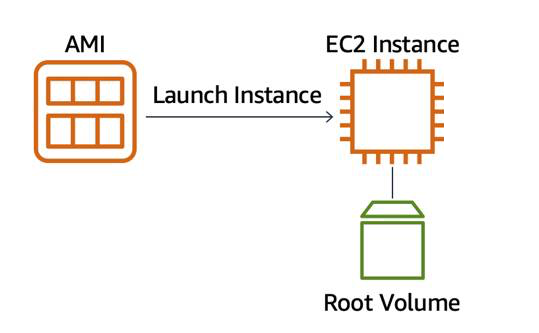
AMI vs EC2
- AMI = template / recipe
- EC2 instance = running server / instantiation of the recipe
- Equivalent to Class vs Object
AMI Reuse
- Create once, launch many identical instances
- Avoids manual reconfiguration and errors

Where Can You Find AMIs?
- AWS Quick Start AMIs
- AWS Marketplace
- My AMIs
- Community AMIs
- EC2 Image Builder
3.3 Types of EC2 Instances
3.3 Container Services on AWS
- Containers package code + dependencies
- Portable across environments (dev → prod → cloud)
- Solve “works on my machine” problems
Docker
- Most common container runtime
- Simplifies container build and execution

Containers vs VMs
- Containers share host OS → lightweight, fast startup
- VMs include full OS → heavier, more isolation
Orchestrate Containers
At scale, you need orchestration to handle:
- Placement
- Failures
- Scaling
- Monitoring
AWS orchestration services:
- Amazon ECS
- Amazon EKS
Amazon Elastic Container Service (ECS)
- AWS‑native container orchestration
- Runs containers on EC2 or AWS Fargate

ECS Agent
- Installed on EC2 instances
- EC2 + agent = container instance
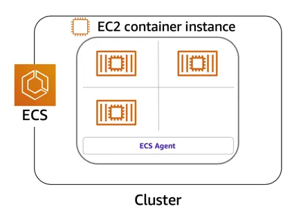
Task Definition
- JSON blueprint describing containers and resources
{
"family": "webserver",
"containerDefinitions": [
{
"name": "web",
"image": "nginx",
"memory": "100",
"cpu": "99"
}
],
"requiresCompatibilities": ["FARGATE"],
"networkMode": "awsvpc",
"memory": "512",
"cpu": "256"
}ECS Summary
- AWS‑native orchestration
- No Kubernetes
- Containers = tasks
- Can run on EC2 or Fargate
Amazon Elastic Kubernetes Service (EKS)
- Managed Kubernetes on AWS
- AWS manages control plane
- EC2 instances = worker nodes
- Containers run inside pods
ECS vs EKS Terminology
| ECS | EKS |
|---|---|
EC2 Instances where containers are run EC2 Container Instances |
EC2 Instances where containers run Worker Nodes |
A task refers to a set of one or more containers that are scheduled together |
A pod - the smallest deployable unit and equivalent of task in ECS - consists of one or more containers that share resources |
Summary: In ECS, the EC2 instances where containers run are called container instances because they have the ECS agent installed to manage tasks |
Summary: In EKS (Kubernetes), the EC2 instances are called worker nodes, and they are part of the broader Kubernetes cluster. Kubernetes distributes containers (in the form of pods) to these nodes. |

| ECS | EKS |
|---|---|
| Container Instance | Worker Node |
| Task | Pod |
| AWS-native | Kubernetes |
3.4 Serverless and AWS Lambda
Remove Undifferentiated Heavy Lifting
- EC2 → you manage OS, patching, scaling
- Containers → AWS helps, but EC2 still exists
- Serverless → no servers to manage
Serverless Characteristics
- No infrastructure management
- Auto scaling
- Pay per use
- Built‑in availability
AWS Fargate
- Serverless compute for containers
- Works with ECS and EKS
- No EC2 management
- Native IAM and VPC integration
AWS Lambda
- Run code without servers or containers
- Event‑driven execution
- Automatic scaling
- Millisecond‑level billing
Lambda Function Structure
def handler_name(event, context):
...
return some_value- Handler = entry point
- Trigger = when it runs
- Configuration = memory, timeout, IAM, networking
Billing
- Charged per request
- Charged per execution time (ms)
- No cost when idle
3.5 Notes from Computing Quiz
EC2 = Virtual Machines
Multiple containers can run on one EC2
Instance type = family + generation + size
- EC2 Instance type indicate the following:
instance familyandinstance size. E.g.:c5.large–> c - compute optimized, c5 - 5th generation, large - indicates instance size > AMI = template for EC2
- EC2 Instance type indicate the following:
AWS Fargate vs AWS EC2 in ECS: For Fargate, AWS manages the provision, configuration and scale of the clusters. For
EC2 in ECS, user manages the provisioning, configuration and scale of EC2 instance clusterServerless services do not require VPC. But can be included in a VPC of your own account.
ECS + EC2 → user manages instances
ECS + Fargate → AWS manages infrastructure
Serverless does not require VPC but can run inside one
4 Networking on AWS
Here is a bare‑minimum, essentials‑only rewrite of that Networking section.
I’ve removed all analogy storytelling, kept only the concepts you need to remember, and preserved the technical accuracy.
Introduction to Networking in AWS
What Is Networking?
Networking is the routing of data between uniquely identified endpoints using IP addresses across a global network.
- Networking enables computers to communicate with each other.
- In AWS, networking spans Regions, Availability Zones, and data centers.
- AWS operates a global network connecting these resources.
Networking Basics
- Communication requires:
- Source
- Destination
- Data (payload)
- Messages are delivered using routing, which determines the path to the destination.
IP Addresses
- An IP address uniquely identifies a computer on a network.
- Computers use binary addresses (0s and 1s) for routing.
- IPv4 addresses are 32‑bit values.
IPv4 Notation
- IPv4 is written in decimal format for readability.
- The 32 bits are split into 4 groups of 8 bits (octets).
- Each octet is converted to a decimal number and separated by dots
- Example format:
x.x.x.x
- Example format:
IPv4 → CIDR (why you need ranges)
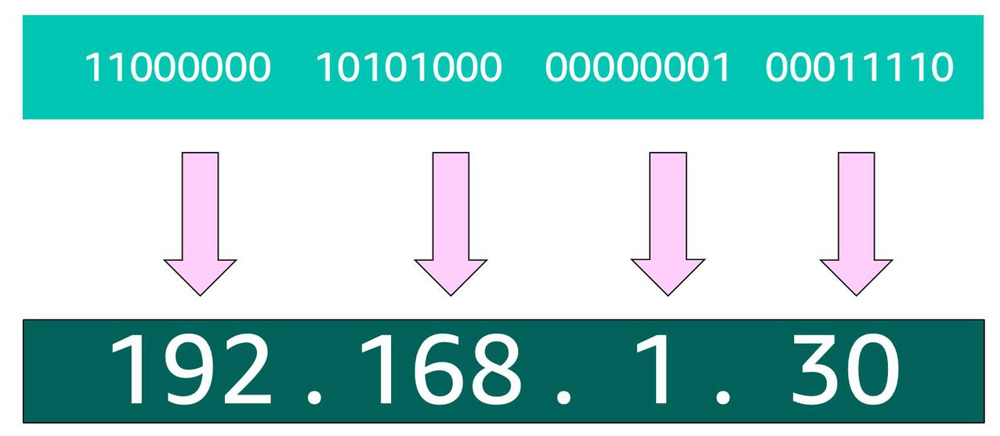
- IPv4 identifies a single host (32 bits → dotted decimal
x.x.x.x). - Networks need ranges, not single IPs → use CIDR.
CIDR Notation (range)
- Format:
STARTING_IP/NUMBER_OF_FIXED_BITS- Example:
192.168.1.0/24→ first 24 bits fixed → 256 IPs (2⁸).
- Example:
- In AWS:
- Smallest VPC/subnet range: /28 = 16 IPs
- Largest VPC range: /16 = 65,536 IPs
- AWS reserves 5 IPs per subnet, so small subnets lose usable space fast.
AWS VPC (what you must choose)
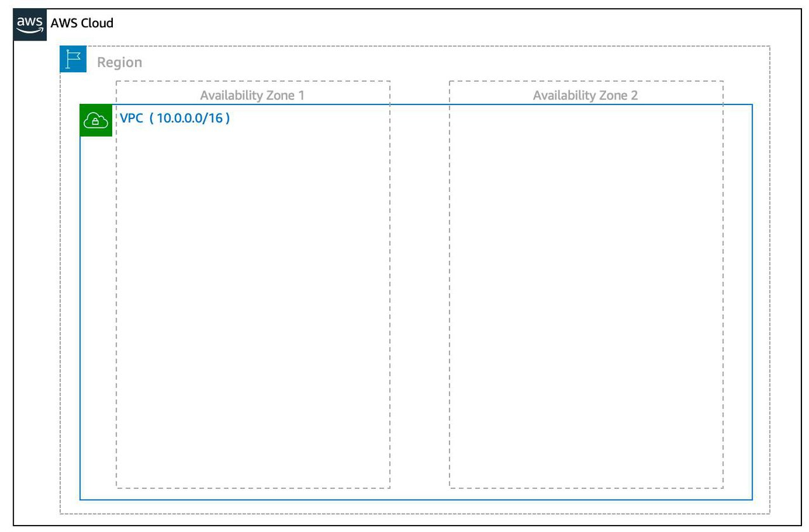
VPC requires:
- Name
- Region (VPC spans multiple AZs in that region)
- CIDR range (VPC size; up to four /16 ranges per VPC)
Subnets (how you place resources)

- Subnet = smaller CIDR block inside a VPC, tied to one AZ.
- Subnet CIDR must be a subset of VPC CIDR.
- EC2 instances are launched inside subnets (therefore in a specific AZ).
- For high availability, create at least two subnets in two AZs.
Reserved IPs in every subnet

- AWS reserves 5 IP addresses per subnet for routing/DNS/management.
→ Plan subnet sizes with this overhead in mind.
Public vs Private subnets (core pattern)
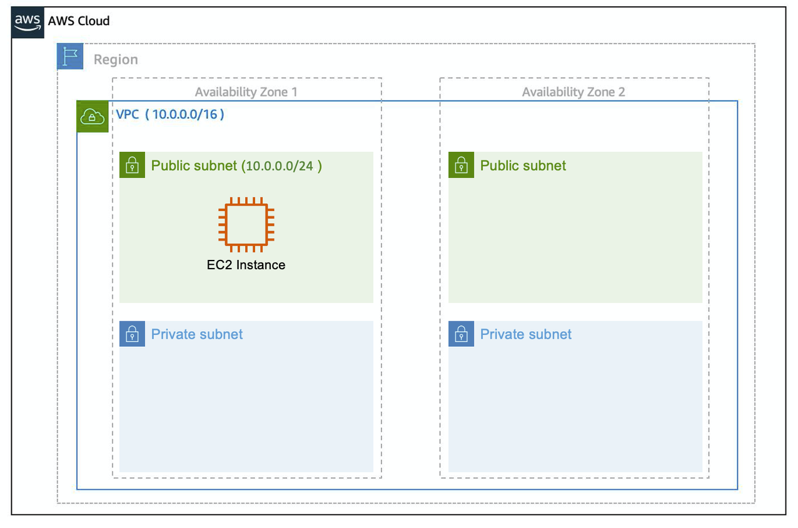
- Public subnet: has a route to an Internet Gateway (IGW).
- Private subnet: no direct IGW route; inbound from internet is blocked by design.
- Common architecture:
- Public: Load balancer
- Private: app servers + databases
- NAT Gateway: private subnet outbound internet access (updates, external APIs)
Gateways (what they do)
Internet Gateway (IGW)
- Enables internet connectivity for the VPC (must be attached to the VPC).
Virtual Private Gateway (VGW)
- Connects VPC to another private network via encrypted VPN (with Customer Gateway on the other side).
NAT Gateway
- Allows outbound-only internet from private subnets by translating private IP → public IP.
- Stateful return traffic is allowed only for connections initiated from inside.
VPC Routing & Security (the essential controls)
Main Route Table
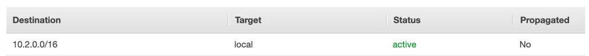
- Default route table created with the VPC.
- Contains routes (Destination → Target).
- Default behavior: allows VPC-local traffic between subnets.
Custom Route Tables

- Route tables can be attached to specific subnets for custom routing.
- If a subnet has a custom route table, it uses that instead of the main route table.
Network ACLs (subnet-level firewall)
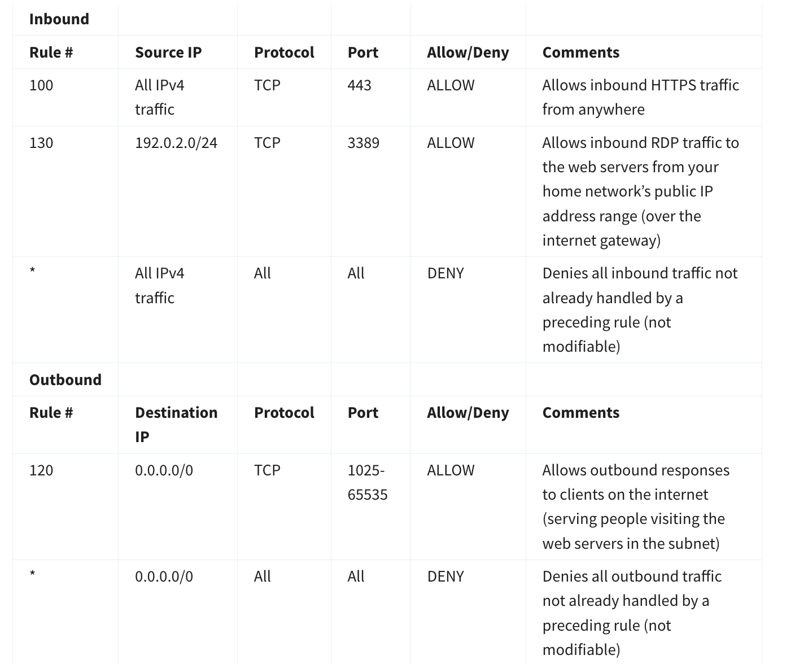
- NACL = stateless subnet firewall.
- Must allow both inbound and outbound explicitly (return traffic isn’t automatic).
- Default vs custom behavior often differs (custom typically starts restrictive).
Security Groups (instance-level firewall)

- Security Group = stateful instance firewall.
- Default SG behavior:
- Inbound: deny all
- Outbound: allow all
- For web servers, allow inbound HTTP/HTTPS:
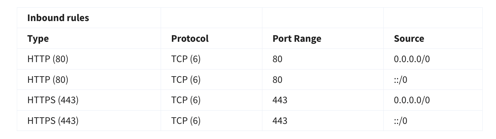
Port 80 vs 443 (only what matters)
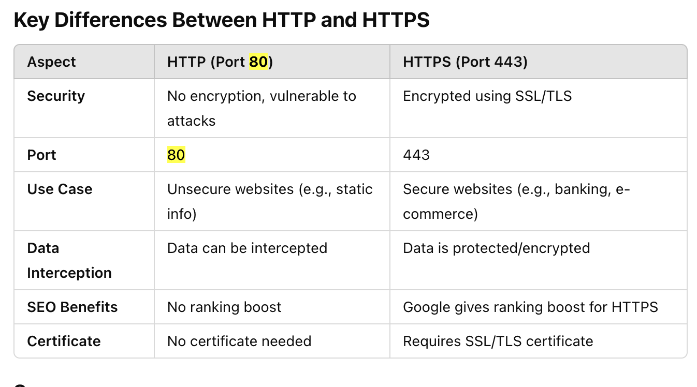
- 80 = HTTP (unencrypted)
- 443 = HTTPS (encrypted via TLS)
Multi-tier security group isolation (typical 3-tier)
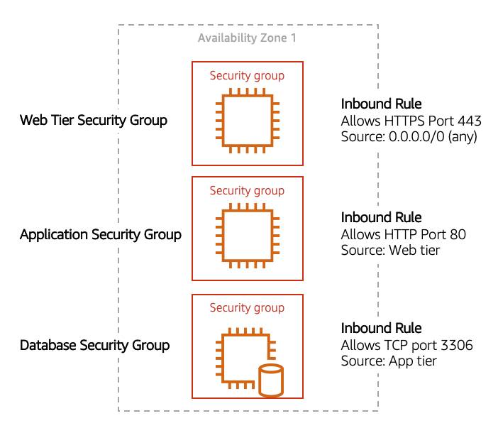
- Web tier: allow internet → web over HTTPS
- App tier: allow web → app over HTTP/needed ports
- DB tier: allow app → DB over DB port (e.g., MySQL 3306)
- This isolates tiers without VLANs (security groups enforce isolation).
How private-subnet EC2 reaches the internet
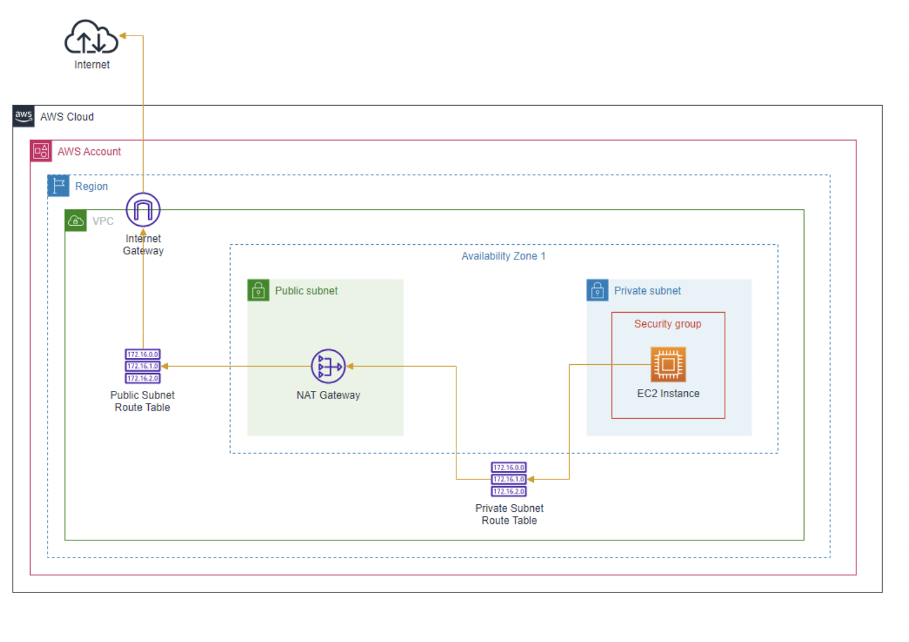
- Private EC2 → routes outbound traffic to NAT Gateway (in a public subnet) → internet.
- No direct inbound internet connectivity to private EC2.
10 VPC troubleshooting checks (public EC2 web app not loading)
- IGW attached to VPC
- Subnet route table has
0.0.0.0/0 → igw - Security Group allows inbound
80/443(and outbound allowed) - NACL allows inbound + outbound for required ports (stateless)
- Instance has a public IP (auto-assign enabled)
- Using correct HTTP vs HTTPS
- User data script ran successfully (
/var/log/cloud-init*) - Instance has correct IAM role permissions (S3/DDB/etc.)
- Your corporate/personal network isn’t blocking access
- App + web server running; check application logs
Quiz Notes
- VPC requires Region, contains AZs and subnets
- Route tables attach to VPC (main) and subnets (custom)
- Public subnet needs IGW + route to IGW
- By default, a
security groupblocks all incoming traffic and allows all outgoing traffic. It is stateful (meaning an result of an incoming traffic is allowed automatically) - NACLs: stateless (must allow inbound + outbound). The
default NACLis associated with all subnets in the VPC by default, allowing all traffic. - CIDR determines network size: /16 larger than /28
A Github Source for Week 2 Quiz
5. Storage
AWS Storage Types
Three storage types:
- Block storage: Splits data into fixed-size blocks with addresses → efficient random access; common for OS, DB volumes.
- File storage: Hierarchical directory tree (paths); each file has metadata (name, size, created date). More folders can add latency.
- Object storage: Flat namespace; each object = data + metadata + unique identifier; optimized for scale & throughput.
File Storage (What/When)
- Structure: Tree-like folders (like traditional file systems).
- Note: Every additional folder adds latency.
- Use cases: large content repositories, dev environments, user home directories.
Block Storage (What/Why)
- Concept: Files split into addressable blocks → efficient retrieval.
- Typically used where low-latency, frequent updates, or OS-level mount semantics are needed.
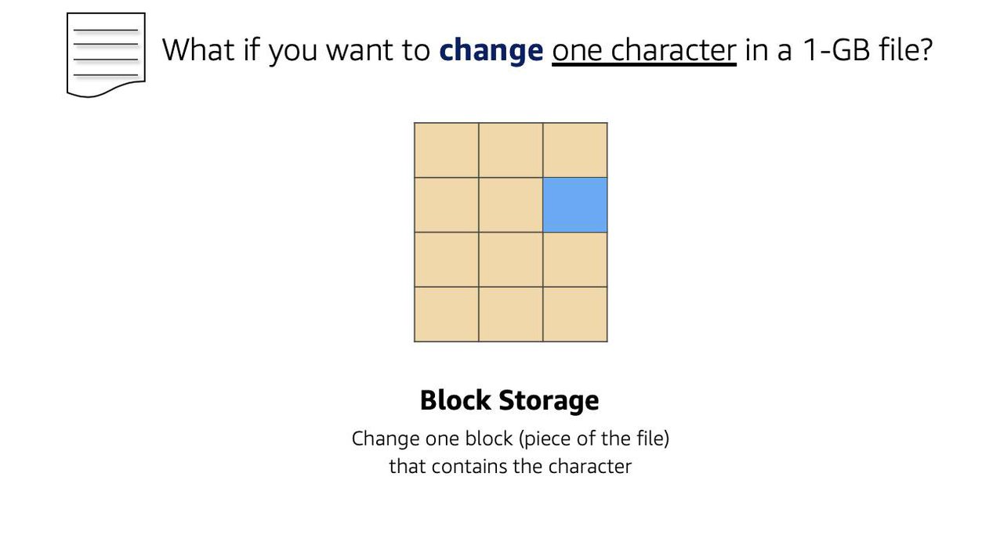
Object Storage (What/Why)
- Flat structure (no true hierarchy).
- Good for high throughput and massive scale.
- Updating part of an object generally means overwriting the whole object.
File vs Object (from your notes):
- File: hierarchy YES; low-latency R/W; partial edit implies overwrite file; example: Amazon EFS
- Object: flat; high throughput; partial edit implies overwrite object; example: Amazon S3
| File Storage | Object Storge |
|---|---|
| Hierarchy - YES; Folder or tree-like structure | Flat Structure. No hierarchy |
| Good for low-latency read-write | Good for high throughput |
| Edit a portion, you overwrite the whole file | Edit a portion, you overwrite the whole object |
| Amazon EFS | Amazon S3 |
EC2 Storage Options: Instance Store vs EBS
Two EC2 instance storage options
- Instance Store: ephemeral block storage; good for stateless workloads.
- EBS: persistent block storage; behaves like an external drive that can outlive the instance.
flowchart TD A[[Temporary<br>Instance Store]] B[[Permanent<br>EBS]] C(Storage connected<br>to EC2) C --> A C --> B
2.2 Attachment relationships (EC2 ↔︎ EBS)
1 EC2 to Many EBS Volumes
- An EBS volume (in the same AZ) can be detached from one EC2 and attached to another.
flowchart LR EC[EC2] EB1[[EBS 1]] EB2[[EBS 2]] EB3[[EBS 3]] EC --> EB1 EC --> EB2 EC --> EB3
1 EBS to 1 EC2 (typical)
flowchart LR EC[EC2] --> EB1[[EBS 1]]
1 EBS to Many EC2 (supported for some instances)
flowchart LR EB1[[EBS 1]] ECA[EC2 A] ECB[EC2 B] EB1 --> ECA EB1 --> ECB
Analogy/limits (from your notes):
- Like an external drive: if compute fails, data can still remain on EBS.
- Volumes have max size limits (scalability bounded per volume).
2.3 Scaling EBS volumes
Two main approaches:
- Increase volume size up to the maximum (16 TB per volume, per your notes).
- Attach multiple volumes to a single EC2 instance (one-to-many).
2.4 AMI types (Instance Store-backed vs EBS-backed
flowchart TD AMI(AMI) AMI1[[Instance Store<br>Backed AMI]] AMI2[[EBS-Volume<br>backed AMI<br>most common]] AMI --> AMI1 AMI --> AMI2
Key points:
- If an instance running on instance-store backed AMI is stopped, data is lost.
- Instance-store backed AMIs are useful for stateless apps.
- Reboot does not lose instance-store data (stop/hibernate/terminate does).
3) Latency vs Throughput (Choosing storage/perf tradeoffs)
Latency = time for one packet to reach destination (important for DB + web interactions)
flowchart LR W[Web Server] -- 1 packet sent<br> in 10 millisec --> C[Client]
Throughput = number of packets delivered per second (important for big data)
flowchart LR W[Web Server] -- 10 packets sent<br> in 1 sec --> C[Client]
EBS Volume Types (SSD vs HDD) + Fit-to-Workload
Rule of thumb (from your table):
- Provisioned IOPS SSD → very low latency (databases, payment systems)
- General Purpose SSD → low latency (web servers, general transactional workloads)
- Throughput Optimized HDD → very high throughput (big data)
- Cold HDD → infrequently accessed; can tolerate higher latency, still may need throughput for transfers
Key point: SSDs are faster and more expensive than HDDs.
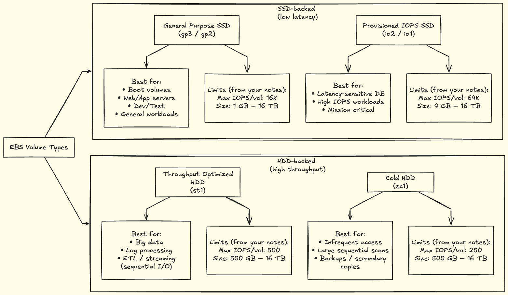
EBS Snapshots (Backups)
- Incremental backups
- First snapshot stores full data
- Later snapshots store only changed blocks
Amazon S3 (Object Storage)
What S3 is
- S3 is object storage: flat structure, objects addressed via unique identifiers.
- Object = file + metadata (store as many as needed).
S3 URL/structure (image requested)

S3 Security
- Everything is private by default
- You can make buckets/folders/objects public, but typical best practice is granular access.
- Two main access controls:
- IAM policies
- S3 bucket policies
When to use S3 bucket policies (per your notes):
- Simple cross-account access without IAM roles
- IAM policy size limit constraints (bucket policies support larger size)
Bucket policies apply to buckets only, not folders/objects.
S3 Encryption
- Encryption in transit and at rest
- Server-side encryption: S3 encrypts before storing; decrypts on download
- Client-side encryption: you encrypt before upload and manage keys/tools
S3 Versioning
- Helps recover from accidental delete/overwrite
- Delete puts a delete marker (object not immediately removed); remove marker to restore
- Overwrite creates a new version; older versions remain accessible
Bucket states:
- Unversioned (default)
- Versioning-enabled
- Versioning-suspended (no new versions, old versions remain)
S3 Storage Classes (quick mapping)
- S3 Standard: frequent access; low latency/high throughput; higher cost; 11-nines durability
- S3 Intelligent-Tiering: unpredictable access; auto-moves between frequent/infrequent tiers; small overhead
- S3 Standard-IA: infrequent but rapid access; lower storage cost, higher retrieval cost
- S3 One Zone-IA: infrequent, single-AZ redundancy; cheaper; lower availability
- S3 Glacier: archival; minutes to hours retrieval; very low storage cost
- S3 Glacier Deep Archive: lowest cost; retrieval up to ~12 hours
- S3 Outposts: on-prem S3 for local residency/low latency needs
Lifecycle Management (Automate cost control)
Lifecycle policies can automate:
- Transition (move between storage classes)
- Expiration (permanent deletion)
Good candidates:
- Periodic logs (keep 1 week/month then delete)
- Data whose access frequency decreases over time (hot → warm → archive → delete)
Storage Services Recap
- EC2 Instance Store: ephemeral block storage; for stateless apps; persists through reboot, not through stop/hibernate/terminate.
- EBS: persistent; supports resizing + snapshots; SSD for I/O sensitive, HDD for throughput intensive.
- S3: object storage; pay-as-you-go; replicated across multiple AZs; not attached to compute.
- EFS / FSx: serverless file services; no upfront provisioning; pay for use.
Quiz Notes (Key Takeaways)
- Max single S3 object size: 5 TB (good for media/video hosting).
- EBS fits high-transaction relational DB storage layers.
- Instance store data persists on reboot, not on stop/hibernate/terminate.
- S3 Standard-IA vs Glacier Deep Archive:
- IA when rarely accessed but needs quick retrieval
- Deep Archive when rarely accessed and retrieval delay is acceptable (often for compliance/legal retention)
- Block storage is best when only a small portion of a file changes.
Resource link (as provided): Storage_quiz
6. Databases in AWS
6.1 My ChatGPT Interactions on Databases in AWS
6.1.1 Q) What is the difference between database, data warehouse and data lake. Explain with examples from AWS.
flowchart TD Q((Where is<br>data stored?)) A1[[Database]] A2[[Data Warehouse]] A3[[Data Lake]] P1((for OLTP)) P2((for OLAP)) P3((for storing raw data)) E1[Amazon RDS<br>for an e-commerce<br>application] E2[Amazon Redshift<br>to query and analyze <br>vast amounts of <br>structured data<br>quickly and efficiently.] E3[Amazon S3<br>for storing vast amounts of<br>unstructured raw data] Q --> A1 Q --> A2 Q --> A3 A1 --> P1 --> E1 A2 --> P2 --> E2 A3 --> P3 --> E3
The terms database, data warehouse, and data lake all refer to systems for managing and storing data, but they serve different purposes and are optimized for different types of data and use cases. Here’s a breakdown, along with AWS examples:
1. Database
Purpose: A database is designed to store structured data that can be easily queried and updated. It’s typically used for transactional processing (OLTP: Online Transaction Processing) where you need to manage day-to-day operations like inserts, updates, and deletes efficiently.
Data Type: Structured data (e.g., relational data with tables, rows, and columns).
Use Cases: Applications like inventory management, customer management, e-commerce websites, or any app that involves a lot of concurrent, real-time transactions.
AWS Example:
- Amazon RDS (Relational Database Service): Supports databases like MySQL, PostgreSQL, SQL Server, and Oracle. It’s managed, which means AWS takes care of backups, patching, and scaling.
- Amazon DynamoDB: A NoSQL database for high-speed, low-latency performance, often used for large-scale applications that require flexible data models.
Example Use Case: An e-commerce website storing customer orders and product information in Amazon RDS for efficient querying and real-time updates.
2. Data Warehouse
Purpose: A data warehouse is optimized for analytical processing (OLAP: Online Analytical Processing) where large volumes of structured data are aggregated and analyzed. It is ideal for complex queries, reporting, and business intelligence (BI) tasks.
Data Type: Primarily structured data, although it may support semi-structured data (e.g., JSON or Parquet formats). Data is typically cleaned and organized before loading into a data warehouse.
Use Cases: Business analytics, trend analysis, data mining, generating reports or dashboards across large data sets (e.g., sales trends across regions or customer segments).
AWS Example:
- Amazon Redshift: A fully managed, petabyte-scale data warehouse designed for fast query execution across large datasets. Redshift is built for complex queries and analytics, and it integrates well with BI tools like Amazon QuickSight.
Example Use Case: A retail company uses Amazon Redshift to analyze sales data across regions to understand seasonal buying trends and forecast future demand.
3. Data Lake
Purpose: A data lake is a centralized repository that allows you to store structured, semi-structured, and unstructured data at any scale. It’s highly flexible and is often used to store raw data until it’s needed for analysis. It supports various formats (e.g., JSON, CSV, images, video, text logs) and allows for big data analytics and machine learning.
Data Type: Structured, semi-structured, and unstructured data (e.g., documents, audio, videos, logs, sensor data).
Use Cases: Data exploration, machine learning, big data analytics, and situations where you want to store a vast array of data types before deciding what analysis or processing you need.
AWS Example:
- Amazon S3 (Simple Storage Service): Typically used to build a data lake in AWS. You can store any type of data in its native format and then later analyze it using other AWS services like AWS Glue (for data transformation), Amazon Athena (for querying), or Amazon EMR (for big data processing).
Example Use Case: A healthcare company uses Amazon S3 to store vast amounts of raw patient data, including medical images, doctor notes, and sensor data from wearables. They later process this data for machine learning models and analytics.
Key Differences:
| Feature | Database (RDS/DynamoDB) | Data Warehouse (Redshift) | Data Lake (S3) |
|---|---|---|---|
| Primary Use | Transactional (OLTP) | Analytical (OLAP) | Store raw data, Big Data |
| Data Type | Structured | Structured, Semi-structured | Structured, Semi-structured, Unstructured |
| Processing | Real-time transactions | Aggregated, Complex queries | Data exploration, batch processing |
| AWS Service | Amazon RDS, DynamoDB | Amazon Redshift | Amazon S3 |
| Example | E-commerce apps, customer orders | Business analytics, dashboards | Raw data for analytics, ML |
Summary of AWS Services:
- Database → Amazon RDS for relational databases or DynamoDB for NoSQL databases.
- Data Warehouse → Amazon Redshift for OLAP and analytical workloads.
- Data Lake → Amazon S3 to store large datasets in various formats for big data analytics.
6.1.2 Q) Are all AWS Databases in EC2 instances? Are they named as db.xxx ?
No, not all AWS databases run on EC2 instances, and they are not named as db.xxx by default. While some database services in AWS may use EC2 instances under the hood, many of them are fully managed services, meaning you don’t need to worry about the underlying EC2 infrastructure. Let me explain further:
1. Managed Databases (Not necessarily tied to EC2 instances)
AWS provides fully managed databases, which abstract away the underlying infrastructure, including EC2 instances, networking, and scaling. With these services, AWS handles most operational tasks like backups, patching, scaling, and failover.
Here are some examples of fully managed AWS database services: - Amazon RDS (Relational Database Service): A managed service for relational databases like MySQL, PostgreSQL, Oracle, SQL Server, and MariaDB. It is designed to handle the operational management of these databases, though the actual database may run on EC2 instances in the background. As a user, you don’t have direct access to the underlying EC2 instances.
Amazon Aurora: A high-performance, MySQL- and PostgreSQL-compatible relational database built for the cloud. Like RDS, Aurora abstracts away the EC2 instances, providing a managed environment.
Amazon DynamoDB: A fully managed NoSQL database that scales horizontally. It doesn’t require EC2 instances, and you don’t need to manage the underlying servers or instances.
Amazon Redshift: A managed data warehouse that allows you to run analytics on structured data. While Redshift clusters are backed by EC2 instances, you manage them at a higher level through the Redshift interface.
Amazon DocumentDB: A fully managed MongoDB-compatible database that abstracts away the underlying EC2 instances.
In these fully managed services, the database instances are not explicitly named as db.xxx; instead, you interact with these services through their respective APIs or consoles without seeing the underlying infrastructure. However, you may define instance identifiers or cluster names like “db1” when provisioning databases, but this is customizable.
2. Self-Managed Databases on EC2 (Named as db.t3.medium, etc.)
If you self-manage a database on an EC2 instance, then you directly control the EC2 infrastructure. In this case, you would need to handle database installation, patching, backups, scaling, and networking yourself. You could launch a database server (e.g., MySQL, PostgreSQL) on an EC2 instance, and here you would see the EC2 instance types named in the t3, m5, db.m6g, or similar families.
Some instance types in RDS do use naming patterns like db.m6g.large, but this is specific to Amazon RDS and Aurora, which provide a managed environment on top of EC2. For example: - db.t3.medium (RDS instance) → This is an instance class used for databases in Amazon RDS, where t3.medium is an EC2 instance type optimized for general-purpose workloads, but the naming convention here indicates that it’s used for a database (db. prefix).
Summary:
- Not all AWS databases run on EC2 instances. Services like DynamoDB and Aurora abstract the infrastructure so you don’t manage EC2s directly.
- In Amazon RDS, the underlying instances may be named as
db.xxx(e.g.,db.t3.medium), but this is specific to the RDS service. - If you’re running a database directly on EC2, you choose standard EC2 instance types like
t3.medium, and you’re responsible for managing the database yourself.
6.1.3 Q) So a PostgreSQL DB can be either Self-Managed Databases on EC2 or AWS Managed ?
Yes, in AWS, a PostgreSQL database can be deployed in two primary ways:
- Self-Managed on EC2:
- Description: You launch a PostgreSQL database on an EC2 instance, essentially creating a self-managed environment where you control the entire database stack.
- Responsibilities: You handle installation, configuration, patching, backup, scaling, and security management.
- Flexibility: Full control over the PostgreSQL settings, customizations, and extensions.
- Use Case: Ideal if you need custom configurations or PostgreSQL plugins that aren’t supported in managed services, or if you want to control the environment entirely.
- AWS Managed PostgreSQL (Amazon RDS or Amazon Aurora):
- Description: Amazon RDS for PostgreSQL and Amazon Aurora (PostgreSQL-compatible) are fully managed database services that AWS operates.
- Responsibilities: AWS handles provisioning, patching, backup, scaling, and automatic failover. You only need to manage data, schema, and performance tuning.
- Flexibility: Limited to configurations and extensions that AWS supports.
- Use Case: Best for users who prefer a managed, highly available, and scalable PostgreSQL solution without the administrative overhead.
So, self-managed on EC2 gives you complete control and flexibility, whereas AWS-managed services offer ease of use and reduced operational burden at the cost of some customization flexibility.
6.2. Managed Databases in Amazon
flowchart TD DB((Databases)) ADB[Databases in AWS] M[AWS Managed Databases] UM[Self Managed Databases] OP[On-Prem Database] SM[Self-managed Database on Amazon EC2] M1[Amazon RDS] M2[Amazon Aurora] M3[Amazon DynamoDB] M4[Amazon Redshift] REL((Releational DB)) MEX1[MySQL] MEX2[PostgreSQL] MEX3[MariaDB] MEX4[SQLServer] MEX5[Oracle] MAA1[Aurora MySQL] MAA2[Aurora PostgreSQL] MAAP1((5x faster than RDS)) MAAP2[Aurora Serverless] NOREL((NoSQL DB)) DDB1((Serverless)) BOTH1((Charges based on usage and storage)) BOTH2((High Availability)) BOTH3((High Durable)) BOTH4((Because: SSD-backed Instances)) DB --> ADB DB --> OP ADB --> M ADB --> UM ADB --> SM M --> M1 M --> M2 M --> M3 M --> M4 M1 --> REL --> MEX1 REL --> MEX2 REL --> MEX3 REL --> MEX4 REL --> MEX5 M2 --> MAA1 --> MAAP1 M2 --> MAA2 --> MAAP1 M2 --> MAA1 --> MAAP2 M2 --> MAA2 --> MAAP2 MAAP2 --> BOTH1 BOTH2 --> BOTH4 BOTH3 --> BOTH4 M3 --> NOREL --> DDB1 --> BOTH1 DDB1 --> BOTH2 DDB1 --> BOTH3 MAAP2 --> BOTH2 MAAP2 --> BOTH3
6.3 Decisions to make when choosing a DB
flowchart TB DB[Choices<br>in Selecing a DB<br>in AWS] ENG[Engine] STORAGE[Storage] COMPUTE[Compute] ENG1((Commercial)) ENG2((Open Source)) ENG3((AWS Native)) ENG1A[[Oracle<br>SQLServer]] ENG2A[[MySQL<br>PostgreSQL]] ENG3A[[Amazon Aurora]] STORAGE1[[EBS Volumes for RDS]] COMPUTE1[[Compute Instance <br>Size and Family <br><br>db.xx?]] TYPE1[Standard<br> <code>m</code> classes?] TYPE2[Memory<br>Optimized<br><code>r</code> and <code>x` classes?] TYPE3[Burstable<br><code>t</code> classes?] S1[SSD?] S2[HDD?] S3[Magnetic Storage?] DB --> ENG --> ENG1 ENG --> ENG2 ENG --> ENG3 ENG1 --> ENG1A ENG2 --> ENG2A ENG3 --> ENG3A DB --> STORAGE --> STORAGE1 DB --> COMPUTE --> COMPUTE1 STORAGE1 --> S1 STORAGE1 --> S2 STORAGE1 --> S3 COMPUTE1 --> TYPE1 COMPUTE1 --> TYPE2 COMPUTE1 --> TYPE3
6.4 Where are Database Instances placed?
RDS lies inside VPC Private Subnet

Dynamo DB lies outside VPC
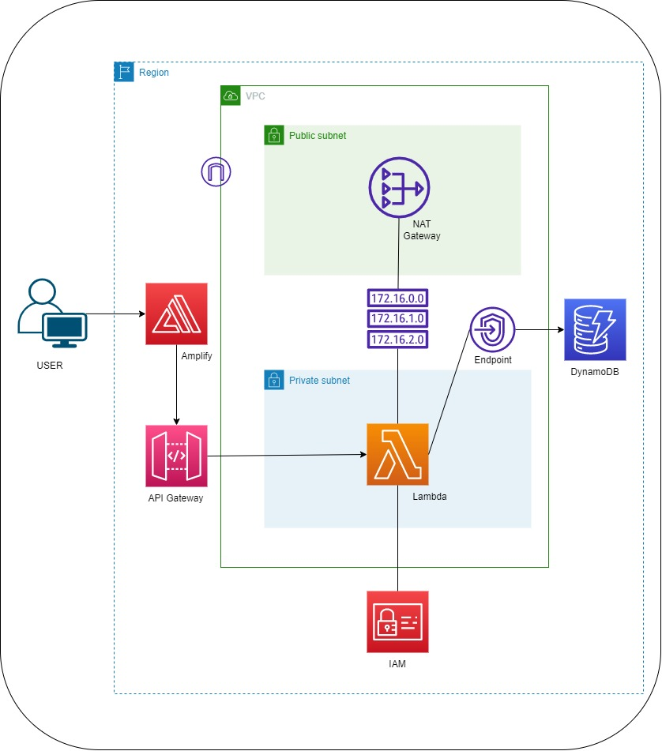
Source: AWS rePost
6.5 Backups in RDS
flowchart TD B((Backups)) A((Automated Backups)) M((Manual Snapshots)) K((Keep backups<br>for 0 to 35 days)) ZERO((0 days means<br>no backup)) E((Enables in<br>point-in-time<br>recovery)) P((For storage<br>longer than 35 days)) Q((Which backup<br>to use)) ANS((Both Automated &<br>Manual combo)) B --> A B --> M A --> K --> ZERO --> E M --> P B --> Q --> ANS
6.6 Redundancy in RDS via Multiple Avalaibility Zones
flowchart TD
RDS[[Amazon RDS]]
subgraph AZ1
subgraph subnetA
C1[[Copy 1 of RDS]]
end
end
subgraph AZ2
subgraph subnetB
C2[[Copy 2 of RDS]]
end
end
RDS --> C1
RDS --> C2
%% Apply bright yellow background to subgraphs
style AZ1 fill:#FFFF00,stroke:#333,stroke-width:2px
style AZ2 fill:#FFFF00,stroke:#333,stroke-width:2px
style subnetA fill:#FFFF00,stroke:#333,stroke-width:2px
style subnetB fill:#FFFF00,stroke:#333,stroke-width:2px
- Multi AZ deployment ensure
High AvailabilityandHigh Durability
6.7 Encryption of EBS Volumes
Consider this scenario: You are a cloud engineer who works at a company that uses Amazon Elastic Compute Cloud (Amazon EC2) instances and Amazon Elastic Block Store (Amazon EBS) volumes. The company is currently using unencrypted EBS volumes. You are tasked with migrating the data on these unencrypted EBS volumes to encrypted EBS volumes. What steps can you take to migrate the data to encrypted EBS volumes?
To migrate data from unencrypted to encrypted Amazon EBS volumes, follow these steps:
1. Create a snapshot of the unencrypted EBS volume.
2. Copy the snapshot, and during the copy process, select the option to encrypt the snapshot.
3. Once the encrypted snapshot is created, create a new EBS volume from the encrypted snapshot.
4. Detach the unencrypted volume from the EC2 instance.
5. Attach the new encrypted volume to the EC2 instance in place of the original.
This ensures seamless migration of data from unencrypted to encrypted EBS volumes without downtime.Source: One of the answers from a Cousera Forum
6.8 DynamoDB
- Amazon DynamoDB is a fully managed NoSQL database service
- With DynamoDB, you can create database tables that can store and retrieve any amount of data and serve any level of request traffic.
- Data in DynamoDB stored in Key-Value pair format
| RDS | NoSQL DB |
|---|---|
| Table | Table |
| Row/Record | Item |
| Column | Attribute |
Like a primary column in RDS, a primary attribute is needed in Dynamo DB. An item could have any number of attributes
6.9 Notes from Database Quiz
7. Monitoring in AWS
Why Monitoring? - Ensuring reliable performance - Are we using resources in a cost-effective way? - Preventive Healthcheck: Prevent outage by scaling infra or fixing issues automated - For security
7.1 Intro to AWS CloudWatch
7.1.1 Services in CloudWatch:
- Metrics
- Alarms (when a metric goes above a threshold)
- Logs
7.1.2 Types of Cloudwatch Metrics
flowchart TD M((Metrics)) M1((Default <br>AWS Service Metrics)) M2((Custom<br>Application Metrics)) EX1((Eg -<br>No of hits to a Service)) EX2((Eg -<br>Website Load Times)) M --> M1 M --> M2 M1 --> EX1 M2 --> EX2
7.1.3 Types of Monitoring
- By default, with the AWS account, a
basic monitoringis enabled (where every 5 minutes some metrics reach the CloudWatch dashboard) - A
detailed monitoringat additional cost can be setup if say, metrics need to be logged every 1 minute instead of 5 minutes
7.1.4 How to filter/categorize Metrics
flowchart TD M((Metrics)) M1((Dimensions)) M2((Namespaces)) EX1((Key/Value pair-<br>FunctionName/MyLambda)) EX2((Metrics <br>belonging to<br>different categories-<br>aws/ec2,<br>aws/lambda)) M --> M1 --> EX1 M --> M2 --> EX2
- A
Dimensioncan be used to filter the metrics - A
Namespacegives a logical grouping of the logs into different categories
7.1.5 Custom Metrics
Using boto3 sdk, you can ensure custom metrics like the following that reflect the health of your application can be sent to CloudWatch logs
- Web page Load Time
- Amount of tasks handled
7.2 Other Services in CloudWatch
7.2.1 Understand the CloudWatch Dashboards
- For viewing aggregated statistics of CloudWatch metrics
7.2.2 CloudWatch Logs
- For lambda, easy to setup: Enable in IAM policy
- For EC2, enable CW logs agent
7.2 CloudWatch Alarms
- When a metric goes above a threshold, an alarm can be set
7.3 EventBridge
- For a Rule-triggered workflow
- Allows you to define rules that filter events based on specific patterns and forward those events to one or more targets.
7.4 Notes from Monitoring Quiz
- Amazon CloudWatch Widgets are used to view and analyze metrics in CloudWatch Dashboard

The 3 states of a metric alarm in CloudWatch:
OK(metric is within the defined threshold),Alarm(metric is outside the defined threshold),Insufficient_data(metric does not have enough data to decide on the alarm)VPC Network traffic (what network comes in and out of the VPC) can be measured by VPC Flow Logs
By default, Lambda functions run in a
Lambda-managed VPC that has internet access. So one need not configure a VPC, Subenets and Security Group unless they want to have their lambda accessed from inside a VPC in their own account. In that case,m you can add a VPC configuration to a lambda function. This restricts the lambda function to resources within that VPC, unless the VPC has internet access
Source: A github source for Week 4 Quiz
8. Optimization in AWS
8.1 Notation in Nines:

8.2 Automatically use a Second Server in a different availability zone
flowchart TD
client
load_balancer
subgraph AZ1
server_1
end
subgraph AZ2
server_2
server_3
end
client --> load_balancer
load_balancer --> server_1
load_balancer -- if server_1<br>goes down --> server_28.3 Types of High Availability Architecture

Active-active clusters rely on a dedicated load balancer for routing or distributing traffic across all participating nodes. The manner by which a load balancer distributes traffic depends on the specific load balancing algorithm used. For instance, some load balancers distribute traffic using Round-Robin, Weighted Round Robin or Random algorithm.

Active-passive setups are common in disaster recovery (DR) strategies. In some DR strategies, the passive node is set up in a separate geographical location and then brought into play once the active node becomes incapacitated
Source for the images and above content: An article on High Availability Architectures
flowchart TD
HA[high_availability<br> architectures]
AP[active_passive]
AA[active_active]
P1((for Stateful<br>Applications))
P2((for Stateless<br>Applications))
HA --> AP
HA --> AA
AP --> P1
AA --> P2 8.4 Route Traffic with Amazon Elastic Load Balancing
8.4.1 What is a Load Balancer:
- Purpose is to distribute the requests across all the servers hosting the application using a load balancer
Load balancing refers to the process of distributing tasks across a set of resources. In the case of the corporate directory application, the resources are EC2 instances that host the application, and the tasks are the different requests being sent. It’s time to distribute the requests across all the servers hosting the application using a load balancer.
To do this, you first need to enable the load balancer to take all of the traffic and redirect it to the backend servers based on an algorithm. The most popular algorithm is round-robin, which sends the traffic to each server one after the other.
A typical request for the application would start from the browser of the client. It’s sent to a load balancer. Then, it’s sent to one of the EC2 instances that hosts the application. The return traffic would go back through the load balancer and back to the client browser. Thus, the load balancer is directly in the path of the traffic.
Although it is possible to install your own software load balancing solution on EC2 instances, AWS provides a service for that called Elastic Load Balancing (ELB).
8.4.2 FEATURES OF ELB
The ELB service provides a major advantage over using your own solution to do load balancing, in that you don’t need to manage or operate it. It can distribute incoming application traffic across EC2 instances as well as containers, IP addresses, and AWS Lambda functions.
The fact that ELB can load balance to IP addresses means that it can work in a hybrid mode as well, where it also load balances to on-premises servers.
ELB is highly available. The only option you have to ensure is that the load balancer is deployed across multiple Availability Zones.
In terms of scalability, ELB automatically scales to meet the demand of the incoming traffic. It handles the incoming traffic and sends it to your backend application.
8.4.3 HEALTH CHECKS
Taking the time to define an appropriate health check is critical. Only verifying that the port of an application is open doesn’t mean that the application is working. It also doesn’t mean that simply making a call to the home page of an application is the right way either.
For example, the employee directory application depends on a database, and S3. The health check should validate all of those elements. One way to do that would be to create a monitoring webpage like “/monitor” that will make a call to the database to ensure it can connect and get data, and make a call to S3. Then, you point the health check on the load balancer to the “/monitor” page.

After determining the availability of a new EC2 instance, the load balancer starts sending traffic to it. If ELB determines that an EC2 instance is no longer working, it stops sending traffic to it and lets EC2 Auto Scaling know. EC2 Auto Scaling’s responsibility is to remove it from the group and replace it with a new EC2 instance. Traffic only sends to the new instance if it passes the health check.
In the case of a scale down action that EC2 Auto Scaling needs to take due to a scaling policy, it lets ELB know that EC2 instances will be terminated. ELB can prevent EC2 Auto Scaling from terminating the EC2 instance until all connections to that instance end, while preventing any new connections. That feature is called connection draining.
8.4.4 ELB COMPONENTS
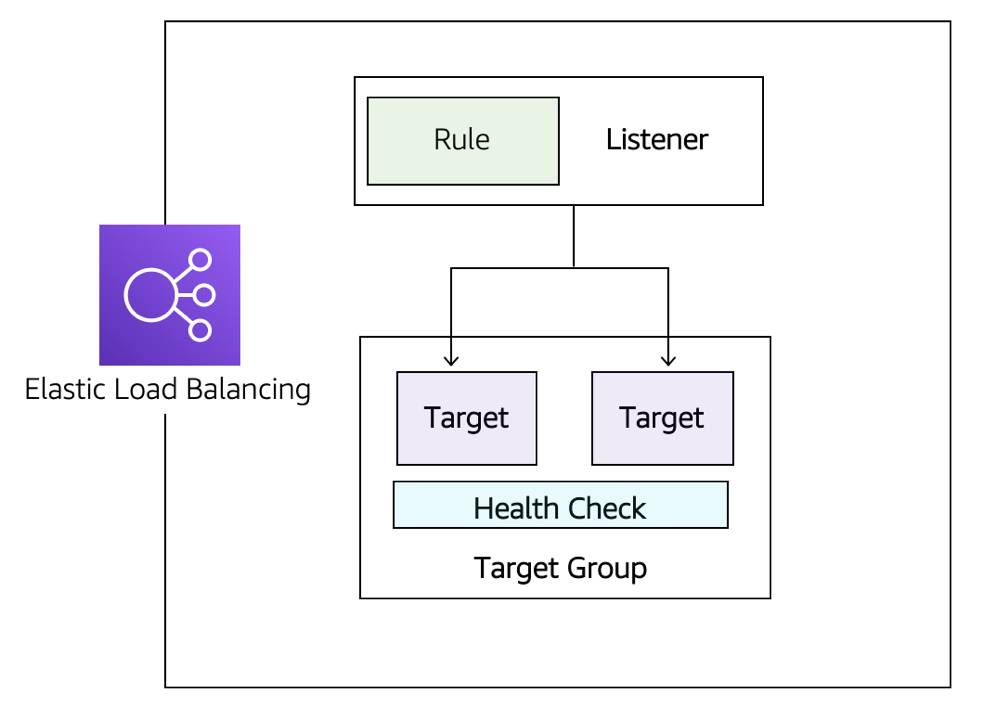
Listeners: The client connects to the listener. This is often referred to as client-side. To define a listener, a port must be provided as well as the protocol, depending on the load balancer type. There can be many listeners for a single load balancer.
Target groups: The backend servers, or server-side, is defined in one or more target groups. This is where you define the type of backend you want to direct traffic to, such as EC2 Instances, AWS Lambda functions, or IP addresses. Also, a health check needs to be defined for each target group.
Rules: To associate a target group to a listener, a rule must be used. Rules are made up of a condition that can be the source IP address of the client and a condition to decide which target group to send the traffic to.
8.5 APPLICATION LOAD BALANCER
- Granular routing: Routes traffic based on HTTP request data (URL path, host, headers, method, source IP).
- Direct responses: Can send fixed responses (e.g., HTML) or redirects (e.g., HTTP → HTTPS).
- TLS offloading: Handles HTTPS traffic with SSL certificates from IAM or AWS Certificate Manager (ACM).
- User authentication: Supports OpenID Connect and integrates with SAML, LDAP, Microsoft AD, etc.
- Traffic security: Uses security groups to restrict allowed IP ranges.
- Round-robin routing: Distributes requests evenly across servers.
- Least outstanding requests routing: Balances load by sending new requests to servers with fewer pending requests.
- Sticky sessions: Uses HTTP cookies to keep traffic from a client directed to the same backend server.
- Protocol scope: Supports HTTP and HTTPS only; use Network Load Balancer (NLB) for other protocols.
8.6 NLB
- Protocol support: Works with TCP, UDP, and TLS. Operates at the connection layer, so it does not understand HTTP/HTTPS.
- Flow hash routing: Routes traffic based on protocol, source/destination IP and port, and TCP sequence number.
- Sticky sessions: Based on the client’s source IP address (not cookies like ALB).
- TLS offloading: Can terminate TLS to reduce backend server load.
- High performance: Instantly handles millions of requests per second (no warm-up needed).
- Static and Elastic IPs: Supports direct client connections via fixed IP addresses—useful for DNS-restricted or firewall-rule scenarios.
- Source IP preservation: Passes the client’s real IP address to the backend (unlike ALB, which shows the LB’s IP).

8.7 Intro to Amazon EC2 Auto Scaling
Availability and reachability is improved by adding one more server. However, the entire system can again become unavailable if there is a capacity issue. Let’s look at that load issue with both types of systems we discussed, active-passive and active-active.
8.7.1 Vertical Scaling
Active-Passive vs Active-Active Systems in Scaling
When too many requests are sent to a single active-passive system, the active server becomes unavailable and (hopefully) fails over to the passive server.
But this doesn’t really solve the problem.
Why Active-Passive Needs Vertical Scaling
- Active-Passive systems rely on vertical scaling (increasing server size).
- With EC2 instances, this means:
- Choosing a larger instance type
- Or switching to a different type
- Limitation: Scaling can only be done when the instance is stopped.
Steps for Vertical Scaling in Active-Passive
- Stop the passive instance (safe, since it’s not receiving traffic).
- Change the instance size or type, then start it again.
- Shift traffic to the passive instance (making it active).
- Stop, resize, and start the previous active instance (so both match).
Drawbacks of Active-Passive Scaling
- Manual and repetitive work each time traffic changes.
- A server can only scale vertically up to a limit.
- Once the limit is reached, the only option is to:
- Create another active-passive system
- Split requests and functionalities across them
- (Often requires massive application rewriting)
Active-Active Advantage
- With active-active systems, scaling is horizontal.
- Instead of making servers bigger, you simply add more servers.
- This approach is easier, more flexible, and avoids rewriting applications.
8.7.2 Horizontal Scaling
- Active-active system works well because the application is stateless (no client sessions stored on the server).
- Scaling from 2 → 4 servers requires no code changes.
- Just add or remove instances as needed.
- Scaling from 2 → 4 servers requires no code changes.
- Amazon EC2 Auto Scaling handles this automatically:
- Creates new EC2 instances when traffic increases.
- Terminates instances when traffic decreases.
- Creates new EC2 instances when traffic increases.
- Key advantage:
- Active-active + stateless apps = true scalability.
- Much more efficient compared to active-passive systems.
- Active-active + stateless apps = true scalability.
8.7.3 Integrate ELB with EC2 Auto Scaling
ELB and Auto Scaling Integration
The ELB service integrates seamlessly with EC2 Auto Scaling. As soon as a new EC2 instance is added to or removed from the EC2 Auto Scaling group, ELB is notified. However, before it can send traffic to a new EC2 instance, it needs to validate that the application running on that EC2 instance is available.
This validation is done via the health checks feature of ELB. Monitoring is an important part of load balancers, as it should route traffic to only healthy EC2 instances. That’s why ELB supports two types of health checks:
- TCP Health Check: Establishing a connection to a backend EC2 instance using TCP, and marking the instance as available if that connection is successful.
- HTTP/HTTPS Health Check: Making an HTTP or HTTPS request to a webpage that you specify, and validating that an HTTP response code is returned.
Traditional Scaling vs Auto Scaling
Traditional Scaling
- With a traditional approach to scaling, you buy and provision enough servers to handle traffic at its peak.
- At low traffic times (e.g., nighttime), there is more capacity than traffic.
- This leads to wasted money, since turning off servers only saves electricity, not provisioning costs.
Cloud (Auto Scaling) Approach
- Cloud uses a pay-as-you-go model.
- It’s important to turn off unused services, especially EC2 instances that run On-Demand.
- Manual scaling can work for predictable traffic, but unusual spikes cause:
- Over-provisioning → wasted resources.
- Under-provisioning → loss of customers.
- Over-provisioning → wasted resources.
Solution → EC2 Auto Scaling
- Automatically adds and removes EC2 instances based on conditions you define.
- Ensures the right number of EC2 instances are running at any time.
8.7.4 Using Amazon EC2 Auto Scaling
The EC2 Auto Scaling service works to add or remove capacity to keep a steady and predictable performance at the lowest possible cost. By adjusting the capacity to exactly what your application uses, you only pay for what your application needs. And even with applications that have steady usage, EC2 Auto Scaling can help with fleet management. If there is an issue with an EC2 instance, EC2 Auto Scaling can automatically replace that instance. This means that EC2 Auto Scaling helps both to scale your infrastructure and ensure high availability.
8.8 Configure EC2 Auto Scaling Components
There are three main components to EC2 Auto Scaling.
- Launch template or configuration:
- What resource should be automatically scaled?
- A configuration of parameters are used to create a EC2 instance
- AMI
- Security Group associated with the EC2 Instance
- EC2 Instance Type
- Additional EBS Volumes
- more
- All of these information are needed by
EC2 Auto Scalingto create the EC2 instances on our behalf
- EC2 Auto Scaling Group (ASG): Where should the resources be deployed? and How many should be deployed?
Where do you deploy the EC2 instances created via EC2 Auto Scaling - VPC - Subnets across different Availability Zones - Type of EC2 instance purchase: On-demand, Spot ?
How many EC2 instances should the ASG create? - Minimum - Maximum - Desired
- Scaling policies: When should the resources be added or removed?
- Scaling policy can be set based on metrics like CPU utilization, measured via a CloudWatch Alarm
8.8.1 Learn About Launch Templates
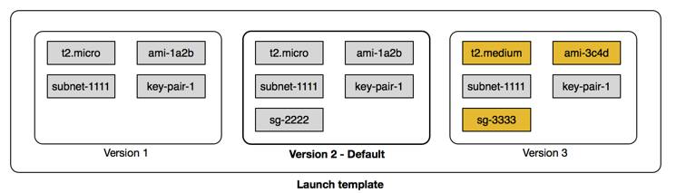
- There are multiple parameters required to create EC2 instances:
- Amazon Machine Image (AMI) ID
- Instance type
- Security group
- Additional Amazon Elastic Block Store (EBS) volumes
- And more…
- Amazon Machine Image (AMI) ID
- All this information is also required by EC2 Auto Scaling to create the EC2 instance on your behalf when there is a need to scale.
- This information is stored in a launch template.
Launch Template Usage
- You can use a launch template to manually launch an EC2 instance.
- You can also use it with EC2 Auto Scaling.
- It supports versioning, which allows:
- Quickly rolling back if there was an issue.
- Specifying a default version of your launch template.
- Iterating on a new version while other users continue launching EC2 instances with the default version.
- Quickly rolling back if there was an issue.
Ways to Create a Launch Template
- Using an existing EC2 instance (fastest way, since all settings are already defined).
- From an existing template or a previous version of a launch template.
- From scratch, where you need to define:
- AMI ID
- Instance type
- Key pair
- Security group
- Storage
- Resource tags
- AMI ID
Note
- Another way to define what Amazon EC2 Auto Scaling needs to scale is by using a launch configuration.
- However, a launch configuration:
- Does not support versioning.
- Cannot be created from an existing EC2 instance.
- Does not support versioning.
- For these reasons, and to ensure that you get the latest features, use a launch template instead of a launch configuration.
8.8.2 Get to Know EC2 Auto Scaling Groups
- The next component that EC2 Auto Scaling needs is an EC2 Auto Scaling Group (ASG).
- An ASG enables you to define where EC2 Auto Scaling deploys your resources.
- This is where you specify the Amazon Virtual Private Cloud (VPC) and subnets the EC2 instance should be launched in.
- An ASG enables you to define where EC2 Auto Scaling deploys your resources.
- EC2 Auto Scaling takes care of creating the EC2 instances across the subnets.
- It’s important to select at least two subnets that are across different Availability Zones (AZs).
- ASGs also allow you to specify the type of purchase for the EC2 instances:
- On-Demand only
- Spot only
- Combination of On-Demand and Spot (lets you take advantage of Spot instances with minimal admin overhead).
- On-Demand only
- To specify how many instances EC2 Auto Scaling should launch, configure three capacity settings for the group size:
- Minimum: The minimum number of instances running in your ASG, even if the threshold for lowering the amount of instances is reached.
- Maximum: The maximum number of instances running in your ASG, even if the threshold for adding new instances is reached.
- Desired capacity: The target number of instances in your ASG.
- This number must be within or equal to the minimum and maximum.
- EC2 Auto Scaling automatically adds or removes instances to match this number.
- This number must be within or equal to the minimum and maximum.
- Minimum: The minimum number of instances running in your ASG, even if the threshold for lowering the amount of instances is reached.
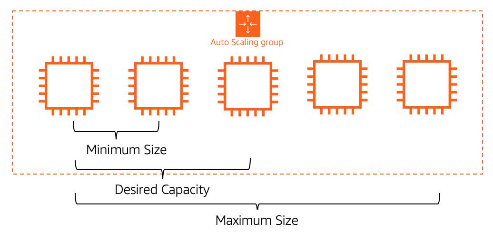
- Minimum capacity
- EC2 Auto Scaling keeps removing EC2 instances until it reaches the minimum capacity.
- Best practice: set at least two instances to ensure high availability.
- Even if scaling down is instructed, EC2 Auto Scaling won’t remove instances below the minimum.
- EC2 Auto Scaling keeps removing EC2 instances until it reaches the minimum capacity.
- Maximum capacity
- When traffic grows, EC2 Auto Scaling keeps adding instances.
- Costs will also increase as more instances are added.
- Setting a maximum ensures the number of instances doesn’t exceed your budget.
- When traffic grows, EC2 Auto Scaling keeps adding instances.
- Desired capacity
- This is the number of EC2 instances created when the Auto Scaling group is launched.
- If the desired capacity decreases, Auto Scaling removes the oldest instance by default.
- If it increases, Auto Scaling creates new instances using the launch template.
- This is the number of EC2 instances created when the Auto Scaling group is launched.
- Ensure availability with EC2 Auto Scaling
- Minimum, maximum, and desired capacity can be set to different values for dynamic scaling.
- If you want Auto Scaling only for fleet management, configure all three to the same value (e.g., 4).
- EC2 Auto Scaling will replace unhealthy instances to always maintain that count, ensuring high availability.
- Minimum, maximum, and desired capacity can be set to different values for dynamic scaling.

8.8.3 Enable Automation with Scaling Policies
ASG Desired Capacity
- By default, ASG stays at its initial desired capacity.
- Desired capacity can be manually changed or adjusted with scaling policies.
- Scaling policies use CloudWatch metrics & alarms (e.g., CPU > 70%) to trigger scaling actions.
- By default, ASG stays at its initial desired capacity.
Types of Scaling Policies
- Simple Scaling Policy
- Uses a CloudWatch alarm to add/remove instances or set desired capacity.
- Can use a fixed number or a percentage of group size.
- Includes a cooldown period to avoid premature scaling while new instances boot.
- Limitation: can’t handle multiple thresholds (e.g., 65% vs 85%).
- Uses a CloudWatch alarm to add/remove instances or set desired capacity.
- Step Scaling Policy
- Handles multiple thresholds with incremental actions.
- Example:
- +2 instances if CPU ≥ 85%
- +4 instances if CPU ≥ 95%
- +2 instances if CPU ≥ 85%
- Responds to alarms even if scaling activity is still in progress.
- Handles multiple thresholds with incremental actions.
- Target Tracking Scaling Policy
- Simplest and most dynamic option.
- Set a target value (e.g., avg CPU %, network in/out, request count).
- Automatically creates and manages the required CloudWatch alarms.
- Simplest and most dynamic option.
- Simple Scaling Policy
8.9 Optimization Notes from Quiz
- 3 Components of
EC2 AutoScaling: 1) Launch Template 2)EC2 AutoScaling Group, 3)Scaling Policy - A ELB automatically scales to meet incoming demand
- When a user uses ELB with an Auto Scaling Group, there is no need to manually register the individual EC2 instances scaled with the load balancer
- If you are routing to targets based on a rule that uses the path of the request, you are using
Application Load Balancer - If you are running low-latency apps, real time games or IoT applications, use
Network Load Balancer(if routing is NOT based on content-based routing) - An application can be scaled
Verticallyby adding more firepower (compute capacity) to the existing machine OR by scalinghorizontallyby adding more EC2 instances of similar compute capacity
Source: A github source for Week 4 Quiz
9. Additional References
AWS Coursera Course on
AWS Technical Essentials
Disclaimer: Beware: Not all information provided by ChatGPT is accurate. They get wrong quite a lot in nuanced sub-topics.
Plagiarism Disclosure:
- The below notes contain my own writing like mermaid charts and bullet points combined with copy-paste paragraph notes from Coursera course (not to be misjudged for plagiarism).
- Most pics are from Coursera course. If a pic is taken from outside, source is cited below it
- I have plenty of interactions with ChatGPT weaved into appropriate sections for better reading
- The below notes are purely to refresh my memory when I take up any AWS exam in future. Unlike other articles, the below notes are not meant to be reviewed from the pov of plagiarism.